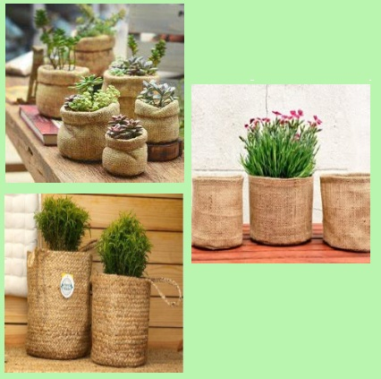

Bienvenido a Deco verde by AL. Conectá con la naturaleza
Acerca del blog
¡Bienvenid@ a Deco Verde by Al! Este es tu rincón verde, tu espacio para reconectar con la naturaleza desde casa, paso a paso, hoja por hoja. En Deco Verde by Al creemos que la belleza está en lo simple: una maceta bien ubicada, una hoja nueva que aparece, el verde que transforma cualquier rincón en algo vivo y especial. Este blog nace del deseo de compartir inspiración, ideas y conocimientos sobre el maravilloso mundo de las plantas, pero también del amor por el diseño y la decoración con alma natural. Acá vas a encontrar consejos prácticos para cuidar tus plantas, recomendaciones según la luz de tu ambiente, y tips fáciles para reproducirlas y verlas crecer. Pero Deco Verde es mucho más que una guía: es un espacio para disfrutar, crear y conectar. Vas a descubrir tutoriales DIY, estilos de decoración con esencia botánica, fotos inspiradoras, y sobre todo, una comunidad que ama las plantas tanto como vos. Ya seas principiante o tengas toda una selva en tu balcón, este blog es para vos. Para que te animes a sumar verde a tus espacios, para que entiendas a tus plantas y para que, en el proceso, también te descubras creciendo un poquito más cada día. Gracias por estar acá. Espero que encuentres ideas que te inspiren, consejos que te ayuden y una energía linda que te motive a seguir cultivando lo más lindo de la vida: lo que crece con dedicación.
